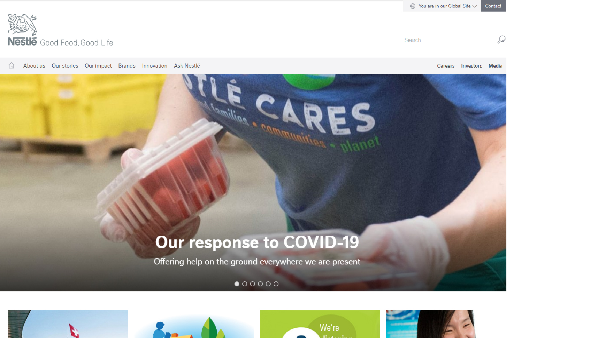
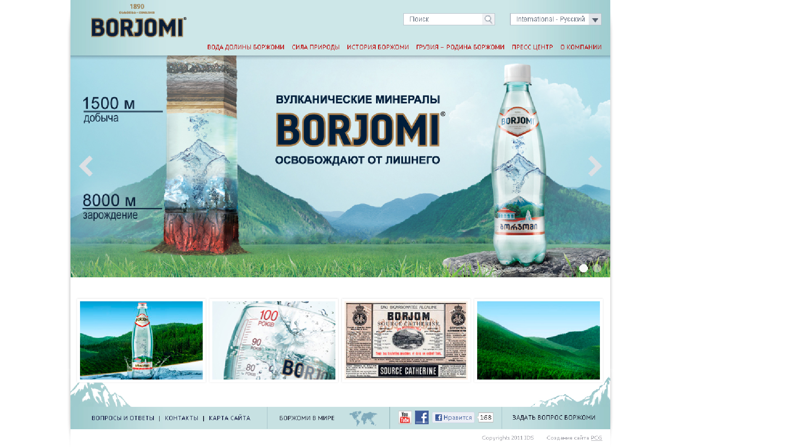
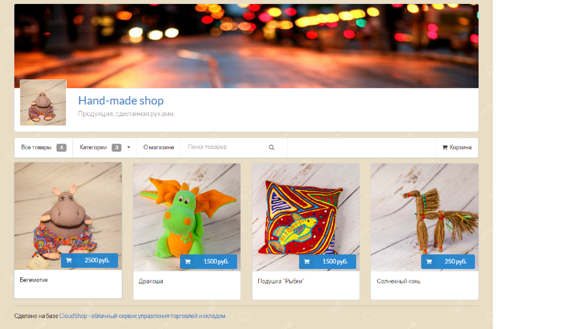
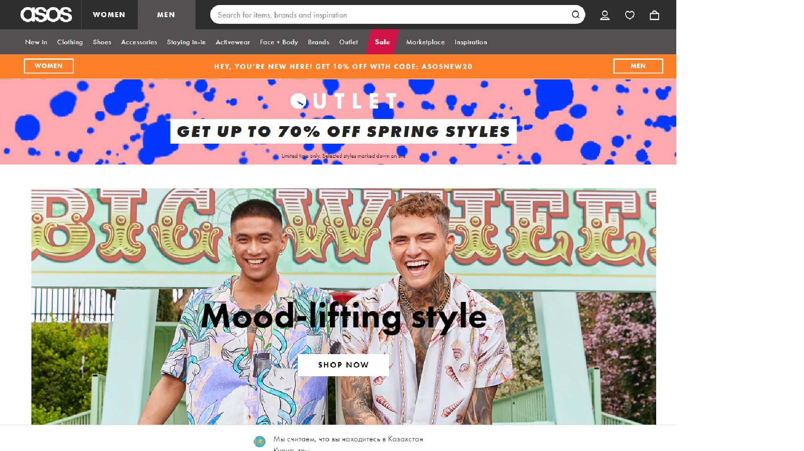
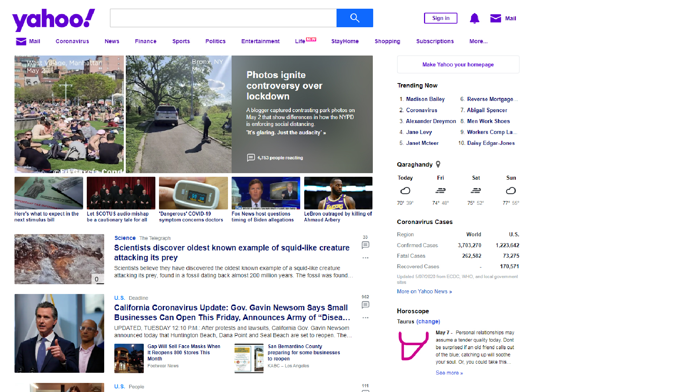

Виды сайтов
Для начала, мы рассмотри виды и назначение сайтов, чтобы в дальнейшем определиться в какой сфере нам будет лучше верстать сайты.
На самом деле видов сайтов гораздо больше. По некоторым оценкам, их насчитывается около сотни. Но мы расскажем только о наиболее популярных и востребованных.
Сайт-визитка
Сайт визитка — это минимально необходимый, но достаточный набор информации, распространение которой полезно как для начинающих компаний, так и для уже состоявшихся организаций. Это своеобразная визитная карточка фирмы, которая содержит основную информацию о деятельности компании и ее контактные данные. В основу данного типа сайта лег принцип "краткость - сестра таланта".
Пример такого сайта:
Корпоративный сайт
По сравнению с сайтом-визиткой, корпоративный сайт является более серьезной структурной единицей. Сайты такого типа выступают в роли инструмента, помогающего привлекать новых клиентов и партнеров для сотрудничества, расширяют рынок сбыта компании, повышая рейтинг и доверие в своей сфере бизнеса. Данный сайт может служить рекламной площадкой в интернете, тут можно публиковать свою продукцию или услуги с возможностью оформить заказ прямо на сайте. Разработка корпоративного сайта выполняется относительно быстро и недорого в отличие от интернет магазина или портала.

Промо-сайт
Если вам нужно прорекламировать что-либо в интернете, промо-сайт – это верный выбор. Сайт в виде интернет-проспекта или буклета прекрасно выступит в основе рекламной кампании и привлечет внимание многих потенциальных клиентов, которые смогут получить всю необходимую информацию о предлагаемом товаре, услуге, мероприятии. Видеосюжеты, аудио-сообщения, анимированные рекламные объявления, лента новостей и отзывов — все это доступно для вашей рекламной кампании, и это, согласитесь, немалое преимущество.
Сайт-витрина
Интернет-вариантом каталога вашей продукции является сайт-витрина. Это логично организованный, структурированный каталог, главное назначение которого — привлечение клиентов. Размещая подробную информацию о товаре, или группе товаров на страницах сайта витрины вы получаете отличный инструмент для рекламы и распространения информации о вашей компании в интернете.

Интернет магазин
Интернет-магазин – это сайта-витрина, где клиент может не только просмотреть товары на страницах каталога, но и купить их. Вы можете "положить" в "корзину" понравившиеся вам товары и оформить покупку тут же, выбрать удобный способ оплаты и доставки товара. Полный аналог обычного магазина только в интернете. Главные качества данного сайта — удобство и функциональность. Пользователи должны иметь возможность легко найти необходимый товар, отправить его в "корзину" и оформить покупку в несколько кликов. Если вам нужно продать ваши товары — вы можете заказать разработку интернет магазина.

Сайт портал
Сайт-портал — это тип сайта, который имеет свою индивидуальность и определенную тематику. Структура и набор функциональных модулей сайта-портала устроены таким образом, чтобы посетители сайта могли максимально в полном объеме получать информацию. Как правило, на сайте-портале всегда есть ленты новостей и событий, форумы, где можно обсудить интересную тему, высказать свое мнение. Нередко сайты порталы имеют свойства и функциональность всех выше перечисленных типов сайтов.
